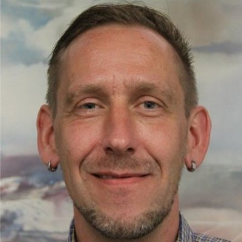

GovHack | celebrating science
 CSIRO and Geoscience Australia are excited to be sponsoring GovHack 2015 as data providers and as National Agency Supporters. As two of the largest producers of national-scale, open science data in Australia we're keen to see what contestants can mash out of our huge variety of datasets.
CSIRO and Geoscience Australia are excited to be sponsoring GovHack 2015 as data providers and as National Agency Supporters. As two of the largest producers of national-scale, open science data in Australia we're keen to see what contestants can mash out of our huge variety of datasets.
We're also very excited to be offering prizes and bounties in the "Celebrating Science" category - we'll post these once the hack starts on Friday July 3 so we don't spoil the GovHack team's suprises.
Here we've put together a little collection of sciency resources and ideas to get you started. Many of our datasets are available through national science portals, most of which allow you to search for data semantically or spatially. Many of the datasets here have counterparts both in Australia and NZ, and we've also included some public data from the Crown Research Institutes (the NZ equivalent of the CSIRO). You can see an overview and search through all the dataset listings here.
A selection of datasets & ideas
Need more information?
Are you a competitor in Govhack 2015? We'll have data mentors from GA and CSIRO available for the duration of the weekend to answer your questions, help you with project ideas and with finding any extra data you might need. The GA mentors will be at the Canberra event, and Jess will be in Perth, but we'll also watch the GovHack Hackerspace forum for your questions, and we can all be contacted online.
| Mentors from the CSIRO | |
|---|---|

|
Jess Robertson I’m a geologist/physicist/data scientist at the CSIRO. I work on a range of science projects across the organisation, generally using geoscience and geospatial data with machine learning and data analysis to improve exploration and production strategies for the minerals and mets sector. As well as science-y things, you can ask me about webservices, maps and geospatial data. Python is my poison of choice. Ping me on twitter @jesserobertson, or send me an email: jesse.robertson@csiro.au. |
|
 |
Jens Klump I’m the CSIRO Science Leader for Earth Science Informatics. I'm interested in data driven science, including simulation, remotely operated instruments, and high performance and cloud computing. I also work with organizations like ANDS on long-term preservation of research data, and I can help you find some of the more interesting datasets in the Research Data Australia and CSIRO data archives. I'm on twitter @snet_jklump, or send me an email: jens.klump@csiro.au. |
| Mentors from Geoscience Australia | |
|---|---|
|
|
Kristin Milton I can tell you how to use web mapping services in your apps and visualisations, or any general geo geekery. I can provide advice on interacting with OGC web services, catalogue services and how to find other GA data you might want to use. I can also get you started using the GA landsat services. Contact me via Google Plus at +KristinMilton. |
|
|
Norman Mueller I analyse satellite imagery to understand the surface of the earth and how it is changing. My main focus is surface water (rivers, lakes) and flooding. I also do a lot of work responding to natural disasters using satellite imagery. You can talk to me about the Water Observations from Space (WOfS) dataset, what it shows, how it was made, what its limitations are and its applications. Contact me via email at nmgis@braidweb.net.au. |

|
Frank Fu I develop web applications which provide interfaces for Australian community to access to various geoscience datasets. You can talk to me about object-oriented software design and development, web application frameworks, Spring/JPA and AngularJS, etc. I have broad experience in programming using Java, C, Python and Shell script, etc. Contact me via email at frankfu03@hotmail.com. |
|
Mehra Jagdish I am GA's GovHack coordinator. Contact me via email at Jagdish.Mehra@ga.gov.au or via phone on 6249 9059. |
|
Are you a data mentor for GovHack and have some stuff to contribute? Please feel free to submit a pull request to the github repo or just flick me an email with the relevant details at jesse.robertson@csiro.au.